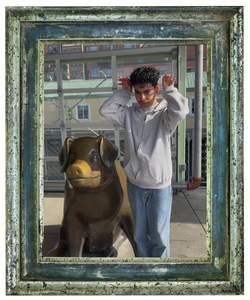

hi, i'm marcos!
I’m a developer obsessed with the intersection of technology,
culture, and society. Currently researching augmentative and alternative communication (AAC)
and human-computer interaction for adults with cognitive disabilities in Colorado with
Dr. Varsha Koushik.
Academically, I’m a third-year CS and Sociology double-major student on the immersive
Block Plan at Colorado College.
One sharpens my technical lens, the other my socio-cultural lens, guiding how I design and study technology with social impact in mind.
I also kicked off Colorado College’s
first interdisciplinary hackathon,
Tiger HaCCs, partnering with the
City of Colorado Springs.
Check out my projects
or grab my résumé.
